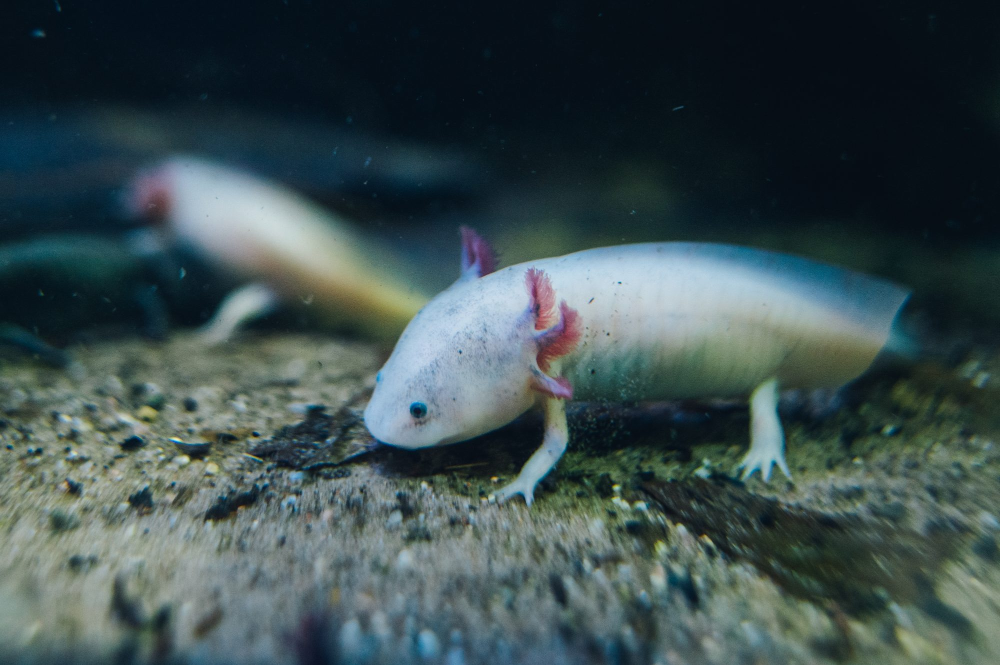
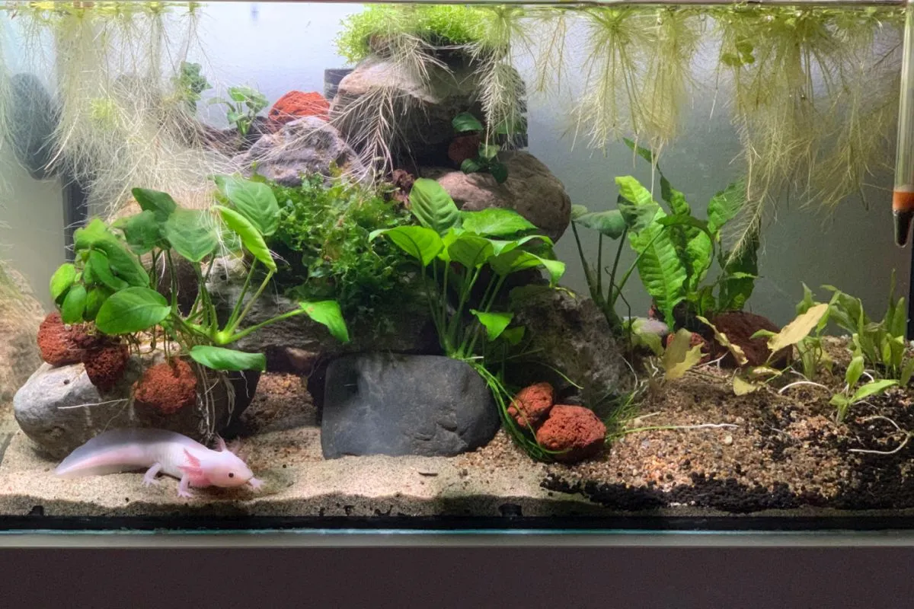
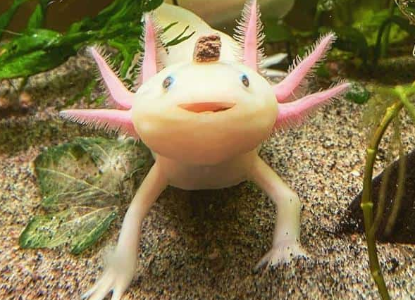

Pochodzenie
Meksyk – jezioro Xochimilco (naturalne środowisko)
Długość
20–30 cm
Długość życia
10–15 lat
Tryb życia
W pełni wodny, aktywny głównie nocą
Cechy szczególne
Neotenia – zachowuje cechy larwalne przez całe życie
Poradnik hodowli i szczegółowe informacje o gatunku

Meksyk – jezioro Xochimilco (naturalne środowisko)
20–30 cm
10–15 lat
W pełni wodny, aktywny głównie nocą
Neotenia – zachowuje cechy larwalne przez całe życie

Optymalna: 16–20°C
Powyżej 24°C – niebezpieczna!
Czysta, filtrowana, bez chloru; regularne podmiany
Słabe – aksolotle nie lubią mocnego światła
pH: 6.5–8, niska zawartość azotanów i amoniaku

Aksolotle potrafią regenerować kończyny, skrzela, a nawet części narządów wewnętrznych.
Nie należy często dotykać – mają delikatną skórę bez łusek.